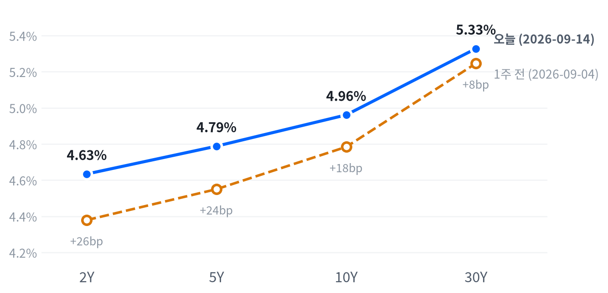

US MARKET BRIEF
AI 속도조절 경고에 반도체·메모리 급락, 지수는 저점 딛고 반등 마감
미국 2026년 9월 14일 거래일 · 한국 9월 15일 발행. 가격은 일간 종가, 장중 경로는 30분봉 기준.
주말 사이 앤트로픽 CEO 다리오 아모데이가 AI 개발 속도조절을 촉구하는 에세이를 내놓으면서 월요일 개장과 함께 반도체·메모리·AI 인프라가 크게 흔들렸다. 나스닥은 -0.56%, S&P500은 -0.48%로 지수 자체의 낙폭은 크지 않았지만, 마벨(-7.32%)·코히런트(-12.73%)·마이크론(-5.25%) 같은 개별 종목은 훨씬 더 크게 빠졌다.
국채 10년물은 장중 한때 5.01%까지 올라 2023년 10월 이후 최고치를 찍었고, 금은 -1.78% 밀렸다. 멀티에셋 전략은 AI 인프라 상대비중을 5일 초과수익 반전을 근거로 OW에서 중립으로 낮춘다.
전략 코멘트
주말 사이 앤트로픽 CEO 다리오 아모데이의 AI 속도조절 경고가 반도체·메모리·AI 인프라를 끌어내렸고, 나스닥은 개장 직후 저점에서 장중 한때 시가 대비 1.2% 반등했다가 다시 밀려 -0.56%로 마감했다.
지수보다 AI 인프라 바스켓 낙폭이 훨씬 커, 이번 조정이 AI 밸류에이션에 걸린 종목들에 가장 직접적으로 닿는 경로라는 뜻이고, 같은 날 10년물이 장중 심리적 레벨을 뚫고 오르며 할인율 경로로도 같은 자산군을 눌렀다.
오늘의 결정은 축소이며 시계는 2~6주다. AI 인프라 상대비중을 5일 초과수익 반전(트리거 충족)을 근거로 OW에서 중립으로 낮추고, 나머지 여섯 자산군은 유지한다.
이 판단은 AI 인프라 5일 초과수익이 다시 +5%포인트를 넘어서면 무효화된다.
오늘의 장
유럽은 미국과 엇갈렸다 — 9월 11일(금) 종가 기준 DAX·FTSE100·유로스톡스50이 평균 +0.70%로 올랐지만, 정작 오늘 미국 증시는 주말 AI 속도조절 논쟁에 대표지수 기준 -0.48% 내렸다. 아시아는 같은 9월 11일(금) 종가 기준 닛케이·항셍·상해종합이 평균 -1.24% 내려, 유럽과 달리 미국의 약세와 같은 방향이었다.
| 지수 | 종가 | 등락 | 기준일 |
|---|---|---|---|
| 닛케이 | 64,011.34 | -1.93% | 2026-09-11 |
| 항셍 | 24,805.63 | -0.60% | 2026-09-11 |
| 상해종합 | 3,888.11 | -1.18% | 2026-09-11 |
| DAX | 25,568.56 | +0.82% | 2026-09-11 |
| FTSE100 | 10,650.40 | +0.39% | 2026-09-11 |
| 유로스톡스50 | 6,325.13 | +0.90% | 2026-09-11 |
| VIX | 17.10 | +7.96% | 2026-09-14 |
간밤 선물은 S&P 선물이 일요일 저녁 9시 30분(21:30 ET)께, 나스닥 선물은 이보다 앞선 저녁 6시 30분(18:30 ET)께 각각 고점(S&P 선물 7,635·나스닥 선물 29,104)을 찍은 뒤 월요일 새벽 5시 저점(S&P 선물 7,594·나스닥 선물 28,816)까지 밀렸다. 현물은 하락 출발했고 갭은 나스닥 -1.2%로 가장 컸으며 S&P500 -0.59%, 러셀2000 -0.25%였다.
참여도는 '소수가 끌어내림'으로 나타났다 — 시가총액가중 지수(SPY, -0.45%)가 동일가중 지수보다 0.51%포인트 더 밀려, 평균적인 종목은 지수가 보여주는 것보다 덜 빠졌다는 뜻이다. 마감 위치로 보면 나스닥(58)·S&P(50)·러셀2000(30) 모두 하루 등락 범위의 중간께인 중단마감으로 끝났다.
마감 위치는 당일 고저 대비 종가의 위치. 최근 2,253거래일 이력에서 고점권 경계는 84.6, 저점권 경계는 25.0이다.
이 하루를 움직인 것은 주말 사이 나온 AI 속도조절 경고 하나였다. 반도체·메모리·AI 인프라가 개장과 함께 가장 크게 흔들렸고, 정오 무렵 트럼프 대통령의 이란 협상 가능성 발언과 오라클의 AI 클라우드 수요 확인이 낙폭을 일부 되돌렸지만 오후 들어 같은 AI 논쟁이 다시 지수를 눌러 고점 대비 되돌림 마감으로 끝났다. 국채금리도 같은 하루 안에서 크게 흔들렸다 — 10년물이 장중 급등했다가 되밀린 것도 이 AI 재료발 위험회피와 겹친 시간대였다.
주식
S&P500은 7,620으로 마감해 최근 2년(504거래일) 가운데 이보다 높았던 날이 27일뿐인 높은 자리를 지켰다. 나스닥(26,186)도 이보다 높았던 날이 44일뿐인 자리, 러셀2000(2,892)은 높은 쪽 15% 안에 드는 자리에서 움직였다. VIX(17.10)는 한가운데쯤에 머물렀지만 오늘 하루만 7.96% 뛰어 평소 하루 변동폭의 1.22배로 보통 범위를 웃도는 움직임이었다. 지수 자체의 오늘 낙폭은 대표지수 기준 평소 범위(보통), 나스닥·러셀2000은 사실상 잠잠했다(미미).
| 지수 | 종가 | 등락률 |
|---|---|---|
| S&P 500 Value | 234.96 | -0.15% |
| Dow | 52,421.20 | -0.29% |
| Russell 2000 | 2,892.24 | -0.40% |
| S&P 500 | 7,619.98 | -0.48% |
| Nasdaq | 26,186.41 | -0.56% |
| S&P 500 Growth | 138.32 | -0.71% |
| 섹터 | 종가 | 등락률 |
|---|---|---|
| Comm. Services | 115.07 | +2.19% |
| Health Care | 167.75 | +1.45% |
| Consumer Staples | 84.42 | +1.25% |
| Consumer Disc. | 112.85 | -0.10% |
| Financials | 57.03 | -0.38% |
| Real Estate | 43.12 | -0.69% |
| Materials | 50.49 | -0.90% |
| Energy | 64.53 | -0.94% |
| Utilities | 41.82 | -1.34% |
| Industrials | 169.93 | -1.42% |
| Technology | 184.28 | -1.81% |
나스닥은 개장가(26,017) 부근인 09:30 ET에 저점(개장 대비 -0.08%)을 찍은 뒤 13:30 ET에 고점(개장 대비 +1.20%)까지 반등했다가 되밀려 마감했다. 지수도 10:30 ET 저점(개장 대비 -0.25%)에서 12:30 ET 고점(개장 대비 +0.48%)까지 오른 뒤 되돌림 마감했다.
낮 반등은 트럼프 대통령의 이란 협상 가능성 발언과 오라클의 AI 클라우드 수요 확인(매출 전체 +30%, 클라우드 인프라 매출 +121%)이 겹친 결과였지만, 주말 AI 속도조절 논쟁이 오후 들어 다시 지수를 짓눌러 고점 대비 되돌림 마감으로 끝났다. 성장주 지수는 -0.71%로 가치주 지수(-0.15%)보다 훨씬 더 빠져, 오늘 하락이 고성장·고밸류 종목에 더 직접적으로 닿았다는 것을 보여준다.
지수가 0.48% 내린 하루 가운데 기술 섹터 혼자 -0.61%포인트를 깎아 낙폭의 대부분을 설명한다. 통신서비스(+0.318%포인트)·헬스케어(+0.134%포인트)·필수소비재(+0.045%포인트)가 그나마 지수를 떠받쳤다.
산업재(-0.082%포인트)·유틸리티(-0.049%포인트)·금융(-0.041%포인트)·에너지(-0.02%포인트)·임의소비재(-0.012%포인트)는 모두 소폭 깎아 먹었다. 소재·부동산은 회귀로 비중을 가려낼 만큼 뚜렷하지 않아 빠졌고, 이 아홉 섹터로 설명되지 않는 몫은 -0.17%포인트다.
전략 해석. 지수 하락의 상당 부분이 대형 기술주 쏠림에서 왔고 세 지수 모두 중단권에서 마감했다는 것은, 낮 반등이 폭넓은 매수보다는 이란·오라클 재료에 기댄 일시적 되돌림에 가까웠다는 뜻이다. 주식과 금리의 역상관도 최근 60거래일 -0.28로 직전 구간(-0.62)보다 느슨해져 있어, 금리가 추가로 오를 때 주식이 예전만큼 반응할지는 지켜볼 부분이다.
섹터 기간별 수익률
채권
10년물은 4.961%로 지난 두 해 이력을 통틀어 이보다 높았던 날이 하루뿐인 자리까지 올라섰고, 30년물(5.328%)도 이보다 높았던 날이 이틀뿐인 자리다. 한 주 사이 2년물은 25.5bp, 10년물은 17.7bp, 30년물은 8.2bp씩 올라 여전히 만기가 짧을수록 더 크게 뛰었다. 종가 기준 오늘 하루는 만기 전반이 오히려 소폭 내려(2Y -1.0bp, 5Y -0.3bp, 10Y -1.4bp, 30Y -2.6bp) 사실상 잠잠했다(미미~보통). 하지만 CNBC·Nikkei Asia는 뉴욕 오전 중 10년물이 장중 5.01%까지 올라 2023년 10월 이후 최고치를 찍었다가 되밀렸다고 전했다 — 종가만으로는 이 왕복이 드러나지 않는다.
| 만기 | 9/14 금리 | 전일 변화 | 9/4 금리 | 주간 변화 |
|---|---|---|---|---|
| 2Y | 4.634% | -1.0bp | 4.379% | +25.5bp |
| 5Y | 4.788% | -0.3bp | 4.550% | +23.8bp |
| 10Y | 4.961% | -1.4bp | 4.784% | +17.7bp |
| 30Y | 5.328% | -2.6bp | 5.246% | +8.2bp |
출처: Naver 국채 종가, 전 만기 2026-09-14 동일 기준일. 주간 비교는 2026-09-04. 1bp는 0.01%포인트.

2s10s 스프레드는 32.7bp로 한 주 전(9월 4일, 40.5bp)보다 7.8bp 더 좁혀졌고, 5s30s는 54.0bp다.
당일 기준으로는 2s10s가 0.4bp 좁혀지는 미세한 불 플래트닝(금리 하락 속 커브 평탄화)이었다. 한 주로 보면 만기 전반이 오르는 가운데 2s10s가 7.8bp 더 좁혀진 베어 플래트닝(금리 상승 속 커브 평탄화)이 이어졌다 — 2년물(+25.5bp)이 30년물(+8.2bp)보다 세 배 넘게 더 올라 단기 쪽이 눌리는 흐름이 계속됐다.
명목금리는 실질금리와 기대인플레(물가에 대한 보상, 시장이 보는 값)로 나뉜다. 이 분해는 9월 11일 FRED 기준이라 오늘 만든 새 충격까지는 담지 못하지만, 그 세션에서 10년물은 하루 1bp 오르는 가운데 실질금리가 5bp를 밀어올리고 기대인플레가 4bp를 끌어내려 반대 방향으로 부딪힌 결과였다. 한 주로 보면 10년물 19bp 상승분 가운데 18bp가 실질금리, 1bp만 기대인플레여서 최근 한 주의 금리 상승은 거의 전적으로 실질금리가 이끌었다.
실질금리가 앞선 상승은 성장 기대나 기간프리미엄(만기가 길수록 더 얹어 받는 값), 국채 수급 쪽 설명을 검토할 단서가 된다. 실제로 10년 기간프리미엄은 0.89%(9월 4일 기준)로 하루 0.8bp, 주간 1.4bp 올라 같은 방향이다. 다만 이 관측이 이번 주 AI발 위험회피를 직접 설명하는 근거는 아니며, 하이일드 스프레드는 2.65%(9월 11일)로 오히려 하루 5bp, 주간 3bp 좁혀져 신용시장에서는 뚜렷한 경계 신호가 나타나지 않았다.
시장이 보는 5년 후 5년 선도금리(먼 미래 구간의 평균 금리)는 9월 11일 기준 5.14%로 하루 사이 1bp 내렸다. 실질 성분은 2.82%다. 가까운 구간의 잡음을 걷어낸 값이 여전히 높은 수준에 머무는 것은 정책금리가 높은 수준에서 오래 머물 것으로 시장이 본다는 뜻으로 읽을 수 있지만, 이 선도금리에는 위험 프리미엄도 섞여 있어 온전히 기대치로만 단정하지 않는다.
만기가 길수록 같은 금리 변화에도 채권 가격이 더 크게 움직인다. 오늘은 만기 전반이 종가 기준 소폭 내려 장기채 보유자에게는 유리했지만, 장중 한때 10년물이 치솟았던 구간에 물렸다면 평가손실 폭이 컸을 것이라는 점은 별개로 남는 위험이다.
5s30s 스프레드는 54.0bp로 5년물과 30년물 사이, 즉 커브 중간부터 장기까지의 기울기를 보여준다. 최근 국채 입찰 수요는 견조했다 — 9월 9일 10년물 입찰의 응찰배율은 2.71배(간접낙찰 79.0%), 9월 10일 30년물 입찰은 2.61배(간접낙찰 79.3%)로 두 입찰 모두 최근 평균 수준을 유지했다. 9월 15일 20년물, 9월 17일 10년물 입찰이 이번 주에도 이어진다.
FX
달러지수(DXY)는 99.47로 최근 2년(504거래일)의 한가운데쯤에 머물러 있다. 원·달러는 1,345원으로 같은 기간 가운데 이보다 낮았던 날이 열흘뿐인 매우 낮은(원화가 강한) 자리이고, 엔·달러는 153.42엔으로 한가운데쯤에서 움직였다. 오늘 변화는 DXY +0.35%, 엔·달러 -0.68%, 원·달러 -0.26%로 모두 평소 범위(보통~미미) 안이었다.
| 자산 | 종가 | 전일 대비 |
|---|---|---|
| DXY | 99.47 | +0.35% |
| USD/KRW | 1,344.64 | -0.26% |
| USD/JPY | 153.42 | -0.68% |
| EUR/USD | 1.1594 | -0.14% |
DXY는 지수. 원·달러와 달러·엔은 달러당 원·엔, 유로·달러는 유로당 달러다.
달러가 왜 이 방향인가. 오늘은 달러지수 상승과 엔·원 강세가 동시에 있었던 하루라 하나의 경로로 설명되지 않는다. 유로·달러가 -0.14% 내려 달러지수 구성에서 비중이 가장 큰 유로의 약세가 지수 상승을 이끈 반면, 엔은 개별 재료로 반대 방향을 탔다. Vantage Markets는 이번 주 연준(9/16)과 일본은행(9/18)이 같은 주에 금리를 결정하는 첫 사례라며 BOJ 인상 기대가 엔을 떠받치고 있다고 전했고, 위험회피 심리도 안전자산인 엔 매수를 거들었을 가능성이 있지만 이는 관측에 대한 메커니즘 후보일 뿐이며, 이를 가르려면 BOJ 정책금리 선물이나 엔 캐리트레이드 청산 규모 같은 원자료가 더 필요하다.
주식과 달러의 역상관도 최근 60거래일 -0.26으로 직전 구간(-0.68)보다 느슨해져 있어, 오늘처럼 위험회피 속에서도 달러지수가 뚜렷하게 강세를 보이지 않은 것이 그 이유 중 하나일 수 있다.
원화는 자체 이력에서 이례적으로 강한 자리에 있으면서도 오늘 하루 소폭 강세(-0.26%)를 더했다. 달러 요인보다 원화 자체의 수급이나 국내 요인이 방향을 정했을 가능성을 시사하지만, 이를 확정할 근거는 이 리포트의 데이터 안에 없다.
포지션 판단에서 DXY의 20일 변화(-0.19%)와 종가(99.47)는 각각 걸어 둔 두 분기점(-3%, 101)에서 멀리 떨어져 있다. 오늘 하루의 반등만으로 그 판단을 바꿀 근거는 아직 없다.
원자재
WTI는 102.10달러로 마감해 지난 두 해(504거래일) 가운데 이보다 높았던 날이 열사흘뿐인 매우 높은 자리를 지켰다. 금은 4,330달러로 한가운데쯤에서 움직였다. 오늘 WTI는 +2.05%로 평소 범위(보통) 안이었고, 금은 -1.78%로 역시 평소 범위(보통) 안이었지만 방향은 정반대였다.
| 자산 | 종가 | 전일 대비 |
|---|---|---|
| WTI | 102.10 | +2.05% |
| Brent | 106.41 | +1.72% |
| Natural Gas | 2.88 | +1.80% |
| Gold | 4,330.40 | -1.78% |
원유는 달러/배럴, 천연가스는 달러/MMBtu, 금은 달러/트로이온스.
WTI는 개장가(103.20달러) 대비 08:30 ET 고점(104.95달러, +1.70%)을 먼저 찍은 뒤 14:30 ET 저점(100.53달러, 개장 대비 -2.59%)까지 밀렸다가 마감(102.10달러)으로 되돌렸다. 트럼프 대통령이 이란과의 협상 가능성을 시사한 발언 직후 브렌트유가 배럴당 107달러 고점에서 반락했다는 보도(ABC News)와 시점이 겹친다.
금은 개장가(4,371달러) 대비 02:00 ET 고점(4,379달러)을 먼저 찍은 뒤 09:00 ET 저점(4,293달러, 개장 대비 -1.78%)까지 밀렸다가 소폭 반등해 마감했다. 국채 10년물이 장중 급등한 시점과 맞물린다.
WTI와 브렌트의 오늘 종가 기준 가격차는 4.31달러다. 공급·수요·달러 가운데 오늘 유가의 장중 급등락을 가장 직접적으로 설명하는 것은 호르무즈 리스크와 이란 협상 기대가 뒤섞인 공급 쪽 재료로 보인다. FXStreet는 "5% 국채 수익률과 인상 기대가 금을 눌렀다"고 설명했는데, 금과 금리의 관계는 같은 측정 구간에서 -0.15로 '거의 무관'에 가까워(직전 구간 -0.52보다도 더 느슨해짐) 실질금리 경로만으로 오늘의 낙폭을 단정하기는 조심스럽고, 안전자산 수요가 위험회피 속에서도 힘을 못 쓴 것은 눈에 띄는 대목이지만, 확정적인 인과관계로 보기는 이르다.
천연가스는 2.88달러로 +1.80% 올라 원유와 같은 방향으로 움직였지만, 저장·운송 구조가 원유와 근본적으로 달라 등락 폭 자체를 나란히 비교하기는 어렵다. 포지션 판단에서 에너지는 WTI 5일 수익률(+11.58%)이 걸어 둔 두 분기점(3%, 20%) 사이에 머물러 있고, 귀금속도 금의 20일·5일 수익률이 모두 그 안쪽이다 — 오늘의 반등·반락 모두 아직 기존 판단을 흔들 만큼 크지 않다는 뜻이다.
매크로
매크로 레짐(성장과 물가를 함께 본 국면)은 연착륙을 열흘째 유지한다. 오늘은 새로 나온 경제지표가 없어 국면 자체는 움직일 수 없다 — 같은 관측치로 계산한 축 점수가 어제와 같으므로 이는 규칙이기 이전에 산술의 결과다. 이 국면을 다시 흔들 만한 것은 성장 쪽에서 나오는 새 지표이거나, 물가가 재가속 쪽으로 방향을 트는 발표다. 성장축 -0.489 · 물가축 -0.526
고용(Labor)
고용은 오늘도 보합이다. 일곱 지표 중 넷이 개선 쪽이지만 나머지 셋이 만만찮게 끌어내려 축 전체로는 방향이 없다. 고용축 -0.005
| 지표 | Actual | Forecast | Previous | 발표일 | 판정 |
|---|---|---|---|---|---|
| JOLTS 구인건수 | 7,271천 | — | 7,182천 | 기준월 갈음(7월) | 미미한 개선 |
| 신규 실업수당 청구 | 206,000▲ | 205,000(컨센서스) | 207,000 | 2026-09-10 | 완만한 악화 |
| 신규 청구 4주 평균 | 206,000 | — | 207,500 | 2026-09-10 | 미미한 악화 |
| 계속 실업수당 청구 | 1,774,000▼ | 1,780,000(컨센서스) | 1,775,000 | 기준월 갈음(8/29) | 미미한 개선 |
| 비농업 고용(증감) | +162천▲ | +53천(다우존스) | +21천 | 2026-09-04 | 완만한 악화 |
| 실업률 | 4.10%= | 4.10% | 4.10% | 2026-09-04 | 완만한 개선 |
| 시간당 임금(전월비) | 0.27% | — | 0.16% | 2026-09-04 | 완만한 개선 |
생산·활동(Activity)
생산·활동은 오늘도 악화다. 다섯 지표 모두 같은 방향으로 잡혀 있다. 활동축 -0.615
| 지표 | Actual | Forecast | Previous | 발표일 | 판정 |
|---|---|---|---|---|---|
| 산업생산(전월비) | 0.20% | — | 0.27% | 기준월 갈음(7월) | 완만한 악화 |
| 내구재 주문(전월비) | 1.08% | — | 0.58% | 기준월 갈음(7월) | 뚜렷한 악화 |
| 신규주택 판매 | 607천 | — | 678천 | 기준월 갈음(7월) | 미미한 보합 |
| 기존주택 판매 | 398.0만 | — | 406.0만 | 기준월 갈음(8월) | 미미한 악화 |
| 실질GDP 성장률(연율) | 1.50% | — | 2.10% | 기준월 갈음(26 2Q) | 미미한 보합 |
소비(Consumption)
소비도 악화를 유지한다. 소매판매와 미시간대 소비자심리 둘 다 같은 방향이다. 소비축 -0.847
| 지표 | Actual | Forecast | Previous | 발표일 | 판정 |
|---|---|---|---|---|---|
| 소매판매(전월비) | -0.58% | — | 0.25% | 기준월 갈음(7월) | 뚜렷한 악화 |
| 미시간대 소비자심리 | 55.20 | — | 49.50 | 기준월 갈음(7월) | 완만한 악화 |
물가(Inflation)
물가는 오늘도 둔화다. 여덟 지표 중 다섯이 둔화 쪽이고, 근거는 CPI·PPI 전월비의 뚜렷한 둔화 판정이다. 물가축 -0.526
| 지표 | Actual | Forecast | Previous | 발표일 | 판정 |
|---|---|---|---|---|---|
| CPI 전월비 | 0.40%= | 0.40%(다우존스) | 0.07% | 2026-09-11 | 뚜렷한 둔화 |
| CPI 전년비* | 3.71% | — | 3.54% | 2026-09-11 | 미미한 교착 |
| 근원 CPI 전년비* | 2.76%▲ | 약 2.40% | 2.79% | 2026-09-11 | 미미한 교착 |
| 근원 CPI 전월비 | 0.29%▲ | 0.20%(다우존스) | 0.22% | 2026-09-11 | 완만한 둔화 |
| 생산자물가(전월비) | 0.40%= | 0.40%(다우존스) | 0.07% | 2026-09-10 | 뚜렷한 둔화 |
| PCE 물가지수 전년비 | 3.70% | — | 3.72% | 기준월 갈음(7월) | 완만한 재가속 |
| 근원 PCE 전년비 | 3.34% | — | 3.34% | 기준월 갈음(7월) | 미미한 재가속 |
| 미시간대 1년 기대인플레 | 4.20% | — | 4.60% | 기준월 갈음(7월) | 완만한 재가속 |
*BLS는 CPI 전년비를 3.4%(핵심 2.4%)로 발표했다. 표의 3.71%(핵심 2.76%)는 FRED 시리즈로 다시 계산한 값이며, 산출 방식 차이로 추정되나 정확한 원인은 확인되지 않았다.
정책 경로는 인상 우위를 유지한다. FXStreet는 9월 16일 FOMC의 25bp 인상 확률을 91%로 보도했고, 다른 트래커는 69.3%로 더 낮지만 인상 우위 방향은 같다.
이 판단을 뒤집을 조건은 하나다 — 9월 16일 FOMC가 동결을 선택하거나 성명·회견에서 인상 신호를 거둬들이면 재검토한다.
실질금리 경로 — 채권 · 귀금속
채권의 구조적 우호와 2~6주 스탠스의 숏 바이어스는 여전히 시계가 다른 판단이다. 3~6개월로는 물가 둔화가 이어지면 장기 채권에 유리하지만, 지금 당장은 CNBC·Nikkei Asia 보도대로 10년물이 장중 심리적 레벨을 넘어섰고 30년물도 5.328%로 지난 두 해 이력에서 이보다 높았던 날이 이틀뿐인 자리에 머물러 있어 만기를 짧게 두는 편이 단기 손실을 줄인다. 근원 물가 압력이 다음 발표에서 눈에 띄게 낮아지고 정책 경로도 완화 쪽으로 돌아서면 이 어긋남은 좁혀진다.
최종수요 경로 — 주식 · 에너지
전달경로는 전일과 같다.
달러·상대금리 경로 — FX
전달경로는 전일과 같다.
AI 캐펙스 사이클 — 메모리 · AI 인프라
전달경로는 전일과 같다.
다음 발표 일정
가장 가까운 정책 이벤트는 9월 16일(수) FOMC 성명(14:00 ET)과 워시 의장 기자회견(14:30 ET)이다. 25bp 인상 확률은 매체별 편차가 커 FXStreet 기준 91%, 다른 트래커 기준 69.3%다.
국채 입찰도 이어진다 — 9월 15일 6주물 국채 입찰 750억 달러와 9월 15일 20년물 국채 입찰 130억 달러가 있고, 9월 17일 10년물 국채 입찰 190억 달러가 예정돼 있다. 9월 18일은 분기 쿼드러플 위칭이고, 같은 9월 18일 산업생산(G.17)도 발표된다. 9월 24일에는 신규주택 판매 발표가 예정돼 있다.
멀티에셋 전략·포트폴리오
어제 걸어 둔 조건 중 실제로 충족된 것은 AI 인프라의 축소 트리거 하나였다 — 5일 초과수익이 -5.79%포인트로 0%포인트 아래로 반전해 상대비중을 OW에서 중립으로 낮춘다. 하이퍼스케일러 캐펙스 가이던스 하향이라는 이벤트형 조건은 아직 확인되지 않았고, 오히려 오라클의 실적은 AI 클라우드 수요가 공급을 앞지른다고 밝혀 캐펙스 사이클 자체를 지지하는 쪽에 가깝다.
나머지 여섯 자산군은 전부 미충족이라 등급을 그대로 지킨다. 주식은 S&P의 50일선 상회폭이 0.13%로 확대 기준(3%)에 크게 못 미쳤고 VIX도 17.1로 축소 기준(22)과는 거리가 멀었다.
채권은 30년물이 5.328%로 확대 기준(5.40%) 아래이고 5s30s 주간 변화도 -15.6bp로 반대 방향이었다. 달러는 DXY 20일 변화가 -0.19%로 확대 기준(-3%)에 크게 못 미쳤고 종가 99.47도 축소 기준(101)과는 거리가 있다.
에너지·귀금속도 각자의 범위 안에 머물러 있어 등급을 유지한다. 메모리도 20일 초과수익이 -10.61%포인트로 여전히 마이너스라 중립을 지키며, OW 재진입에는 3영업일 잠금이 아직 남아 있다.
| 자산군 | 등급 | 유지 | 전일대비 | 논거 | 다음 분기점 |
|---|---|---|---|---|---|
| 주식 | 중립 대형주 선별 유지 | 10영업일 | 유지 | S&P 50일선 대비 +0.13%, VIX 17.1로 두 트리거 모두 미충족이어서 중립을 유지한다. | S&P가 50일선을 3%p 넘게 웃돌면 확대, VIX가 22를 넘으면 축소 검토. |
| 채권 | 숏 바이어스 벨리 OW · 5Y 중심 보유 | 22영업일 | 유지 | 30년물이 5.328%로 확대 기준(5.40%) 아래이고 5s30s 주간 변화도 -15.6bp로 반대 방향이라 숏 바이어스를 유지한다. | 30년물이 5.40%를 넘으면 확대, 5.05% 아래로 내리거나 9월 16일 FOMC서 인하 신호가 나오면 축소. |
| FX | 달러 소폭 숏 통화별 차이 확인 | 22영업일 | 유지 | DXY 20일 -0.19%로 확대 기준(-3%)에 못 미치고 종가도 99.47로 축소 기준(101) 아래라 달러 소폭 숏을 유지한다. | DXY 20일 -3% 이하로 가속하면 확대, 101을 넘으면 축소. |
| 원자재·에너지 | 소폭확대 통항 정상화 확인 | 10영업일 | 유지 | WTI 5일 수익률이 +11.58%로 확대 기준(20%) 아래, 축소 기준(3%) 위여서 소폭확대를 유지한다. | WTI 5일 수익률이 +20%를 넘으면 비중확대, +3% 아래로 되돌리면 중립 복귀. |
| 원자재·귀금속 | 소폭확대 금 중심 헤지 유지 | 10영업일 | 유지 | 금 20일 수익률 -1.19%, 5일 -2.29%로 확대·축소 기준 모두 안쪽이어서 소폭확대를 유지한다. | 금 20일 수익률이 +15%를 넘으면 비중확대, 5일 -8% 아래로 급락하거나 DXY가 101을 넘으면 중립 검토. |
| 메모리 | 중립 재진입 조건 점검 | 2영업일 | 유지 | S&P500 대비 20일 초과수익이 -10.61%포인트로 여전히 마이너스라 중립을 유지한다. OW 재진입에는 3영업일 잠금이 남아 있다. | 20일 초과수익이 다시 +5%포인트를 넘어서면 OW 재검토. |
| AI 인프라 | 중립 주문·전력 흐름 분리 점검 | 1영업일 | ▼1단계 | 5일 초과수익이 -5.79%포인트로 반전해 축소 기준(0%포인트 하회)을 충족했다. 주말 AI 속도조절 논쟁에 따른 동반 하락도 반영해 OW에서 중립으로 낮춘다. | 5일 초과수익이 다시 +5%포인트를 넘으면 OW 재검토, 하이퍼스케일러 캐펙스 가이던스 흐름도 함께 확인한다. |
리스크 시나리오는 세 갈래다. 첫째, 9월 16일 FOMC가 실제로 금리를 올리고 추가 인상 여지까지 시사하면 단기금리가 더 오르고 채권 숏 바이어스는 유지되겠지만, 이미 밸류에이션 부담을 받고 있는 반도체·AI 인프라 종목에는 할인율 경로로 추가 압박이 될 수 있다.
둘째, 주말 AI 속도조절 논쟁이 더 커져 실제 규제 논의나 오픈AI 기업공개 연기 같은 후속 조치로 이어지면, 메모리·AI 인프라 두 상대비중 포지션이 이미 중립으로 낮춘 상태에서도 추가 되돌림 압력을 받을 수 있다. 오라클 실적이 보여준 수요 우위 서사와 이 논쟁이 계속 충돌할 가능성이 있으며, 셋째로 이란-미국 협상이 실제 진전으로 이어져 유가가 추가로 미끄러지면 에너지의 소폭확대 논리가 흔들리는 동시에 인플레이션 우려가 잦아들어 채권에는 오히려 우호적으로 작용하는 엇갈린 결과가 나올 수 있다. 세 시나리오 모두 이번 주 안에 판가름 날 가능성이 커, 다음 며칠의 등급 변화 폭이 최근보다 클 수 있다.
모의 포트폴리오
한 등급 한 칸의 위험 예산은 0.75%포인트인데, 이 예산을 상품별 가격이 오르내리는 폭으로 나눠 칸의 크기를 정하므로, 최근 617거래일 가격으로 잰 그 폭이 클수록 한 칸이 작아진다. 주식 코어는 이 폭이 연 15.3%로 낮아 한 칸이 4.75%포인트인 반면, AI 인프라는 56.9%로 높아 한 칸이 1.75%포인트에 그친다. 중립 구성에서 주식이 지는 위험의 몫은 66.1%로, 자본 배분이 아니라 상관을 걷어낸 가격 진폭 비율로 잰 값이다.
이 성과는 2026년 8월 14일 설정한 모의 운용 기록이다. 벤치마크는 모든 등급을 중립(0)으로 둔 채 같은 상품으로 구성한 책이며, 수수료·세금·체결 오차 같은 실제 거래 비용은 반영하지 않았다. 에너지 슬리브는 WTI 선물 기반 상장지수펀드라서 그날그날의 현물 유가 등락과 정확히 같이 움직이지 않을 수 있다.
직전 거래일(9월 11일) 대비 포트폴리오는 -0.95%로 중립 기준(-0.68%) 대비 -0.27%포인트 더 빠졌다. 최근 한 주(9월 4일~9월 14일)로는 -1.25%로 중립 기준(-1.04%)보다 -0.21%포인트 뒤처졌고, 설정 이후(2026년 8월 14일부터, 8월 28일 하루치 원장 결측 포함)로는 -1.75%로 중립 기준(-1.19%) 대비 -0.56%포인트 처져 있다.
오늘 하루만 보면 AI 인프라가 -0.48%포인트로 가장 크게 깎아 먹었고 메모리(-0.21%포인트)·주식 코어(-0.16%포인트)·귀금속(-0.14%포인트)가 뒤를 이었다. 에너지(+0.07%포인트)와 장기채(+0.01%포인트)가 손실을 상쇄했다.
설정 이후 누적으로는 에너지가 +0.95%포인트로 유일하게 크게 벌었고, 메모리(-0.77%포인트)·주식 코어(-0.72%포인트)·AI 인프라(-0.61%포인트)·귀금속(-0.36%포인트)이 가장 크게 깎아 먹었다. 지금까지 최대 낙폭은 -2.06%다.
설정 후 19거래일(8월 28일 결측 포함)로 최소 표본(60거래일)에 못 미쳐 그 밖의 성과 통계는 아직 계산하지 않는다.
| 슬리브 | 상품 | 비중 | 중립 대비 | 설정 이후 기여 |
|---|---|---|---|---|
| 주식 코어 | SPY | 37.25% | -1.75%p | -0.72%p |
| 메모리 | MU·WDC·STX | 3.50% | 0.00%p | -0.77%p |
| AI 인프라 | MRVL·COHR·LITE·GEV·VRT | 5.25% | +1.75%p | -0.61%p |
| 채권 장기(20Y+) | TLT | 8.40% | -5.60%p | -0.11%p |
| 채권 단기(1-3Y) | SHY | 19.60% | +5.60%p | -0.16%p |
| 귀금속 | GLD | 9.75% | +3.25%p | -0.36%p |
| 에너지(WTI) | USO | 6.00% | +2.00%p | +0.95%p |
| 달러 약세 | UDN | 7.25% | +7.25%p | +0.03%p |
| 현금성 | BIL | 3.00% | -12.50%p | +0.01%p |
오늘 낮춘 AI 인프라 등급(OW→중립)은 이 책에 아직 반영되지 않았다. 마감 뒤에 정한 등급을 그날 종가에 담으면 결과를 미리 보고 산 셈이 되기 때문에, 등급 변경은 항상 다음 거래일 종가부터 실제 비중에 반영한다. 9월 11일 정한 등급을 반영한 비중이 오늘 표에 실린 값이다.
주목 섹터·종목
가장 크게 움직인 것은 AI 인프라 관련주였다. 코히런트(-12.73%)·루멘텀(-9.92%)은 연초 이후 급등한 뒤 실적 발표를 앞두고 이번 AI 속도조절 논쟁이 되돌림의 방아쇠가 됐다는 관측이 있다. GE 버노바(-8.62%)는 이날 GLJ 리서치가 매도 등급·목표가 470달러로 커버리지를 새로 시작하며 "구조적 복리성장주로 가격이 매겨진 경기순환형 가스터빈 제조사"라고 평가한 것이 겹친 종목 고유 재료가 확인된 사례이며, 마벨(-7.32%)은 9월 11일 AI 인프라 서밋 기대로 3%p 넘게 올랐던 것을 하루 만에 되돌리며 가장 크게 흔들렸다.
버티브(-7.65%)는 개별 촉매가 확인되지 않아 AI 인프라 바스켓 동반 하락으로만 보이고, 코히런트·루멘텀의 정확한 낙폭에 대한 일부 매체 보도는 우리 데이터와 완전히 일치하지 않아(기사 스냅샷 시점 차이로 추정) 확정하지 않는다.
메모리·DRAM
| 자산 | 종가 | 전일 대비 |
|---|---|---|
| Micron | 924.03 | -5.25% |
| Western Digital | 426.94 | -4.53% |
| Seagate | 805.55 | -2.97% |
| Nvidia | 210.96 | -3.36% |
| Samsung Elec | 249,000.00 | -4.05% |
| SK hynix | 1,697,000.00 | -6.35% |
삼성전자·SK하이닉스는 9월 14일 한국장 원화 가격, 나머지는 미국장 달러 가격. 엔비디아는 수요 연관 비교 종목이다.
메모리·저장장치 종목이 미국·한국 가릴 것 없이 전부 하락했다. TradingKey는 "앤트로픽·오픈AI 등의 프런티어 모델 개발 속도조절 요구가 공급망 전반의 고성장 기대를 흔들었고, 투자자들이 HBM·D램·낸드 등 AI 서버용 고성능 저장장치 수요 전망을 재점검하고 있다"고 전했다. 같은 기사는 샌디스크(우리 추적 바스켓 외)도 5% 넘게 빠졌다고 덧붙였으며, 개별 종목 실적·가이던스 변경은 확인되지 않았고, 전부 주말 매크로 뉴스에 연동된 동반 하락으로 보인다.
메모리 바스켓의 최근 20거래일 초과성과는 -10.213%포인트다. 반도체 지수 대비 민감도(베타) 1.463배를 대입한 몫이 -10.833%포인트로 낙폭의 대부분을 설명하고, 대형-소형 축은 오히려 +1.12%포인트로 낙폭을 줄이는 방향이었다. 성장-가치 축은 단기·장기 계수의 부호가 엇갈려 인용하지 않으며, 이 세 축으로 설명되지 않는 몫은 -0.998%포인트로 크지 않아, 이번 낙폭은 스타일 요인보다 반도체 업종 전반의 동반 조정에 더 가깝다. 시장 민감도(베타) 2.759배 · 설명력 72.6%
메모리와 나스닥의 동조는 같은 측정 구간에서 0.49로 직전 구간(0.66)보다 느슨해졌다. 매크로 논리에서 메모리는 여전히 AI 데이터센터 투자 사이클을 근거로 3~6개월 구조적으로 우호적인 자산군이지만, 멀티에셋 전략은 20일 초과수익이 -10.61%포인트로 여전히 마이너스라는 이유로 상대비중을 중립에 묶어 둔다 — 구조적 그림과 2~6주 판단이 계속 갈리는 자산군이다.
AI 인프라
| 종목 | 분야 | 종가 | 전일 대비 |
|---|---|---|---|
| Marvell | 연결 반도체 | 218.82 | -7.32% |
| Coherent | 광학·레이저 | 266.50 | -12.73% |
| Lumentum | 광통신 | 835.03 | -9.92% |
| GE Vernova | 발전·전력망 | 874.76 | -8.62% |
| Vertiv | 전력·냉각 | 237.39 | -7.65% |
마벨·코히런트·루멘텀·GE 버노바·버티브 다섯 종목이 9월 11일(금)엔 반대로 산타클라라 AI 인프라 서밋(9/15~17) 신제품 기대로 대부분 3.5%포인트 넘게 올랐었다. 이번 주말 AI 속도조절 논쟁이 그 기대를 하루 만에 뒤집은 셈이다.
AI 인프라 바스켓의 최근 20거래일 초과성과는 -9.972%포인트다. 반도체 축 민감도(베타 1.074배)를 대입한 몫이 -7.954%포인트로 가장 크고, 대형-소형 축(-3.53%포인트)과 성장-가치 축(-0.636%포인트)도 모두 낙폭을 보탰다. 이 세 축으로 설명되지 않는 몫은 오히려 +2.148%포인트로, 개별 종목·업종 고유 재료(주말 AI 속도조절 논쟁, GE 버노바의 매도 의견 등)가 세 축이 예상하는 낙폭을 오히려 2.15%포인트가량 상쇄했다는 뜻으로 읽을 수 있다. 시장 민감도(베타) 3.66배 · 설명력 81.6%
멀티에셋 전략은 5일 초과수익이 -5.79%포인트로 반전한 것을 근거로 상대비중을 OW에서 중립으로 낮춘다. 하이퍼스케일러 캐펙스 가이던스 하향이라는 이벤트형 조건은 아직 확인되지 않았고, 오라클의 실적은 오히려 AI 클라우드 수요가 공급을 앞지른다는 서사를 지지해, 이번 조정이 캐펙스 사이클 자체의 훼손인지 밸류에이션 되돌림인지는 다음 실적 시즌까지 지켜볼 부분이다.
오늘의 학습과 복기
지난 질문 복기
직전 발행분은 9월 11일 발행분이다. 그 글이 남긴 질문은 "다음 미국 세션에도 2년 금리가 10년보다 더 크게 오르는가"였고, 9월 11일 하루 자체는 그 질문을 낳은 출발점이었다(2년 +5.8bp, 10년 +1.4bp). 실제 다음 세션인 오늘(9월 14일)은 2년물이 -1.0bp, 10년물이 -1.4bp로 둘 다 내렸지만 낙폭은 더 작았다.
2s10s 스프레드도 33.1bp에서 32.7bp로 0.4bp 좁혀져 같은 패턴이 이어졌다. 다음 확인은 2s10s 스프레드와 9월 16일 FOMC의 인상 확률이며, 시점은 9월 16일 FOMC 성명(14:00 ET)·기자회견(14:30 ET)이다.
오늘의 개념
오늘은 종가만 보면 국채시장의 하루가 실제보다 작아 보이는 사례였다. 종가 기준 10년물의 하루 변화는 -1.4bp에 그쳤지만, CNBC와 Nikkei Asia는 뉴욕 오전 중 10년물이 장중 5.01%까지 올라 2023년 10월 이후 처음으로 5%를 웃돌았다가 되밀렸다고 전했다. 하루 한 번의 종가 스냅샷은 그 사이의 왕복을 지우기 때문에, 변동성을 종가 등락률만으로 판단하면 실제 리스크를 과소평가할 수 있다.
직접 확인
2s10s 스프레드는 9월 11일 33.1bp에서 9월 14일 32.7bp로 하루 만에 -0.4bp 좁혀졌다.
공식: 스프레드(bp) = (10년 금리 − 2년 금리) × 100. 교차검산: 10년 1일 변화(-1.4bp) − 2년 1일 변화(-1.0bp) = -0.4bp로 같은 값이 나온다. 실행: python3 -c "print((4.961-4.634)*100 - (4.975-4.644)*100)" → -0.40000000000000213. 입력은 2026-09-14 Naver 국채 종가 2년물·10년물과 그 전 세션(2026-09-11) 값.
다음 확인
관측 대상은 여전히 2s10s 스프레드와 CME FedWatch의 9월 16일 FOMC 25bp 인상 확률이며, 시점은 9월 16일 FOMC 성명(14:00 ET)·기자회견(14:30 ET)이다(질문 최초 제기일 2026-09-11). 연준이 실제로 인상하거나 추가 인상 여지를 시사하면 단기물이 계속 장기물보다 더 오르며 가설이 강화되고, 동결하거나 매파 서프라이즈 없이 2년물이 되돌리며 스프레드가 다시 벌어지면 가설이 약해진다. 같은 주 9월 18일 일본은행 회의도 겹쳐 있어 엔 캐리트레이드발 글로벌 금리 동조화가 해석을 복잡하게 만들 수 있다는 점도 함께 살핀다.